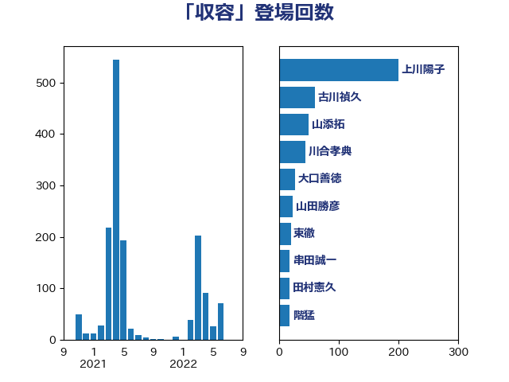

単語「収容」

| 上川陽子 | 自由民主党 | 200 回 |
| 古川禎久 | 自由民主党 | 60 回 |
| 山添拓 | 日本共産党 | 50 回 |
| 川合孝典 | 国民民主党 | 44 回 |
| 大口善徳 | 公明党 | 27 回 |
| 山田勝彦 | 立憲民主党 | 23 回 |
| 東徹 | 日本維新の会 | 20 回 |
| 串田誠一 | 日本維新の会 | 18 回 |
| 田村憲久 | 自由民主党 | 18 回 |
| 階猛 | 立憲民主党 | 18 回 |
| 井出庸生 | 自由民主党 | 15 回 |
| 福島みずほ | 社会民主党 | 14 回 |
| 吉田宣弘 | 公明党 | 12 回 |
| 小林鷹之 | 自由民主党 | 11 回 |
| 西村康稔 | 自由民主党 | 10 回 |
| 鎌田さゆり | 立憲民主党 | 10 回 |
| 石川大我 | 立憲民主党 | 9 回 |
| 本村伸子 | 日本共産党 | 8 回 |
| 金村龍那 | 日本維新の会 | 7 回 |
| 伊波洋一 | 無所属 | 6 回 |
| 嘉田由紀子 | 無所属 | 6 回 |
| 田村智子 | 日本共産党 | 6 回 |
| 石橋通宏 | 立憲民主党 | 6 回 |
| 稲田朋美 | 自由民主党 | 6 回 |
| 高良鉄美 | 無所属 | 6 回 |
| 塩村あやか | 立憲民主党 | 5 回 |
| 安江伸夫 | 公明党 | 5 回 |
| 川田龍平 | 立憲民主党 | 5 回 |
| 後藤茂之 | 自由民主党 | 5 回 |
| 松原仁 | 立憲民主党 | 5 回 |
| 秋野公造 | 公明党 | 5 回 |
| 赤嶺政賢 | 日本共産党 | 5 回 |
| 中谷一馬 | 立憲民主党 | 4 回 |
| 伊藤孝恵 | 国民民主党 | 4 回 |
| 加田裕之 | 自由民主党 | 4 回 |
| 塩田博昭 | 公明党 | 4 回 |
| 浅田均 | 日本維新の会 | 4 回 |
| 米山隆一 | 立憲民主党 | 4 回 |
| 倉林明子 | 日本共産党 | 3 回 |
| 加藤勝信 | 自由民主党 | 3 回 |
| 岸信夫 | 自由民主党 | 3 回 |
| 岸田文雄 | 自由民主党 | 3 回 |
| 杉田水脈 | 自由民主党 | 3 回 |
| 浮島智子 | 公明党 | 3 回 |
| 清水貴之 | 日本維新の会 | 3 回 |
| 渡辺周 | 立憲民主党 | 3 回 |
| 田所嘉徳 | 自由民主党 | 3 回 |
| 稲富修二 | 立憲民主党 | 3 回 |
| 菅義偉 | 自由民主党 | 3 回 |
| 長妻昭 | 立憲民主党 | 3 回 |
| 青山大人 | 立憲民主党 | 3 回 |
| 伊藤孝江 | 公明党 | 2 回 |
| 古川元久 | 国民民主党 | 2 回 |
| 城内実 | 自由民主党 | 2 回 |
| 塩川鉄也 | 日本共産党 | 2 回 |
| 寺田学 | 立憲民主党 | 2 回 |
| 山口壯 | 自由民主党 | 2 回 |
| 山谷えり子 | 自由民主党 | 2 回 |
| 日下正喜 | 公明党 | 2 回 |
| 本田太郎 | 自由民主党 | 2 回 |
| 枝野幸男 | 立憲民主党 | 2 回 |
| 森まさこ | 自由民主党 | 2 回 |
| 清水真人 | 自由民主党 | 2 回 |
| 福田昭夫 | 立憲民主党 | 2 回 |
| 音喜多駿 | 日本維新の会 | 2 回 |
| こやり隆史 | 自由民主党 | 1 回 |
| たがや亮 | れいわ新選組 | 1 回 |
| 上田清司 | 国民民主党 | 1 回 |
| 中西祐介 | 自由民主党 | 1 回 |
| 丹羽秀樹 | 自由民主党 | 1 回 |
| 井野俊郎 | 自由民主党 | 1 回 |
| 伊藤俊輔 | 立憲民主党 | 1 回 |
| 伊藤忠彦 | 自由民主党 | 1 回 |
| 佐藤英道 | 公明党 | 1 回 |
| 佐藤茂樹 | 公明党 | 1 回 |
| 和田義明 | 自由民主党 | 1 回 |
| 大西健介 | 立憲民主党 | 1 回 |
| 室井邦彦 | 日本維新の会 | 1 回 |
| 宮内秀樹 | 自由民主党 | 1 回 |
| 小宮山泰子 | 立憲民主党 | 1 回 |
| 小池晃 | 日本共産党 | 1 回 |
| 小熊慎司 | 立憲民主党 | 1 回 |
| 小野寺五典 | 自由民主党 | 1 回 |
| 小野田紀美 | 自由民主党 | 1 回 |
| 山下貴司 | 自由民主党 | 1 回 |
| 山本博司 | 公明党 | 1 回 |
| 山本香苗 | 公明党 | 1 回 |
| 平井卓也 | 自由民主党 | 1 回 |
| 後藤祐一 | 立憲民主党 | 1 回 |
| 志位和夫 | 日本共産党 | 1 回 |
| 斎藤嘉隆 | 立憲民主党 | 1 回 |
| 早坂敦 | 日本維新の会 | 1 回 |
| 有村治子 | 自由民主党 | 1 回 |
| 杉尾秀哉 | 立憲民主党 | 1 回 |
| 杉本和巳 | 日本維新の会 | 1 回 |
| 松川るい | 自由民主党 | 1 回 |
| 松沢成文 | 日本維新の会 | 1 回 |
| 梅村みずほ | 日本維新の会 | 1 回 |
| 水岡俊一 | 立憲民主党 | 1 回 |
| 浜地雅一 | 公明党 | 1 回 |
| 田村貴昭 | 日本共産党 | 1 回 |
| 石井苗子 | 日本維新の会 | 1 回 |
| 磯崎仁彦 | 自由民主党 | 1 回 |
| 笠浩史 | 無所属 | 1 回 |
| 美延映夫 | 日本維新の会 | 1 回 |
| 菅家一郎 | 自由民主党 | 1 回 |
| 萩生田光一 | 自由民主党 | 1 回 |
| 蓮舫 | 立憲民主党 | 1 回 |
| 藤岡隆雄 | 立憲民主党 | 1 回 |
| 赤澤亮正 | 自由民主党 | 1 回 |
| 重徳和彦 | 立憲民主党 | 1 回 |
| 野上浩太郎 | 自由民主党 | 1 回 |
| 野中厚 | 自由民主党 | 1 回 |
| 野田聖子 | 自由民主党 | 1 回 |
| 阿部弘樹 | 日本維新の会 | 1 回 |
| 高野光二郎 | 自由民主党 | 1 回 |
| 鰐淵洋子 | 公明党 | 1 回 |
| 麻生太郎 | 自由民主党 | 1 回 |